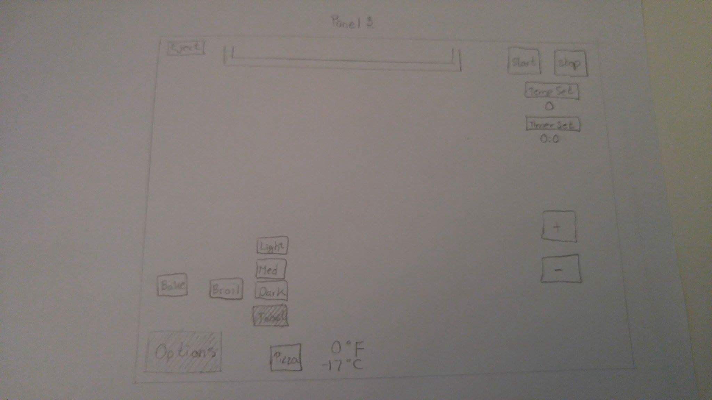

The first panel displays all the buttons of the toaster. Starting with the eject button on the upper left, the option button on the lower right, the start and stop button on the upper right. Along with the temp set and timer set buttons. Lasty is the plus and minus buttons on the bottom right.
The second panel is the action after the options button has been pressed, it will display the options Bake, Broil, Toast, and Pizza
The third panel expands the toast option when pressed. It has a list of different shades the toast could be such as light, medium, and dark.
The last panel shows that after pressing the toast and light that the modes will display above the current temperature inside the toaster